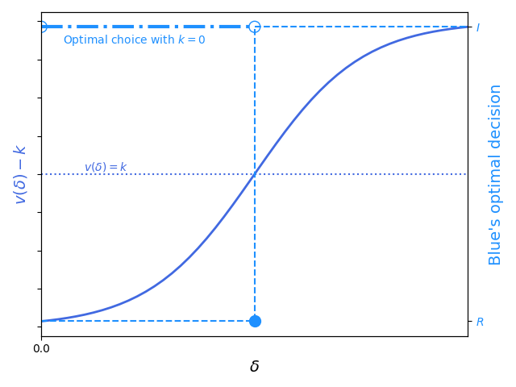

Elementary microeconomics teaches that national defense is a public good and thus will almost certainly be provided by the state. With rare exception this has been true throughout history. The degree to which state provision of national defense is vertically integrated varies by nation. China, for example, depends heavily on state-owned enterprises to design and manufacture defense platforms, while the United States defers almost all design (post requirements) and manufacture to private enterprise or publicly traded firms. Yet no nation defers financing of war to the private sector; ultimately the central government is assumed responsible for the financial cost of going to war.
Must nations always finance their wars? More precisely, in a bilateral war between Red and Blue, must Blue always pay for the defense capabilities that it uses to wage the war? Is it possible to pare down the role of the state in war to planning (strategic and tactical) and execution only – not design, manufacture, or financing?
The crux of our argument is that, conditioned on Blue winning the war, the post-war economy of Red can be mortgaged to finance private-sector defense production in Blue. We argue that this novel financial arrangement is a positive-sum outcome – i.e., is beneficial for both Blue and Blue’s domestic defense industry (abbreviated BI) – and that, given a specific contractual arrangement that we derive, BI is incentivized to act cost-effectively and rapidly on Blue’s behalf.
The paper proceeds as follows. In Section 2, we lay out the Blue defense industry’s incentives and the incentives of other relevant economic actors – property/casualty insurance firms and financial arbitrageurs – and derive contract structures that could enable private financing of defense production. In Section 3, we explain how Blue’s defense industry would get paid if not by the Blue government. Section 4 lays out why and how the Blue government could credibly commit to mortgaging of the post-war economy. Section 5 concludes the paper and suggests avenues for future research.
The paper is entirely theoretical. Econometric and experimental study, though probably necessary for operational application of the results presented here, are out of scope because the results of those studies would be too sensitive for public disclosure.
We will work from the inside out. We consider a “simple” conflict – a country in which we consider ourselves stationed, called Blue, versus an adversary country, called Red – and augment this structure with the central role of private industry within Blue’s economy. We term this last, central entity “Blue Industry” or BI for short. We make the important simplifying assumption that BI is a monolithic entity for the duration of this paper. We discuss the ramifications of this assumption in Section 5.
As an exercise in reductio ad absurdem, we start with the starkest case of privately funded defense capabilities. Suppose it is common knowledge between Blue and BI that Blue and Red will go to (kinetic) war at a pre-determined point in time. Suppose also that Blue has credibly committed to spending no additional funding on the war; BI can either decide to invest in defense capabilities on behalf of Blue itself or decide not to do that. (We will revisit the certain-date and credible commitment assumptions later in this paper.) Supposing that investment is a binary choice and that the war can either be won or lost, this leads to the following simple decision diagram:
The decision problem for BI is fully parameterized in terms of probabilities of winning (losing) under the decision to invest or not invest and in terms of the value function V(x, y) where x is the choice to invest or not and y is the binary random variable of winning or losing the war. For it to be rational for BI to invest in defense capabilities it must have E[V(i)] > E[V(di)], or
$$
pV(i, w) + (1-p)V(i, l) > q V(di, w) + (1-q)V(di, l) \tag{1}.
$$
Though overparameterized, this inequality gives us a useful starting point. We see immediately that many things could increase the probability of BI choosing to invest: an increased probability of winning given investment (assuming that V(w) > V(l)), an increased payoff from winning, a decreased payoff from losing, and so on. Each term in the inequality is a lever for Blue to pull when attempting to incentivize BI to invest in defense production; likewise, each term will be affected by Red to disincentivize BI’s investment (assuming, for the time being, that the probability of Blue’s victory is monotone increasing in Blue’s investment choice).
Relaxing the discrete nature of BI’s investment gives a more useful treatment of the problem. We consider the identical game structure as above but let I ∈ (0, ∞) be the amount of capital BI chooses to invest. BI solves maxIE[π(I)], where
$$
E[\pi(I)] = p(I) V(I,w) + (1-p(I))V(I,l) - I \tag{2}.
$$
where we assume that BI can express the value of Blue’s winning or losing the war in monetary terms. The first order condition is
$$
0=\frac{\partial E[\pi(I)]}{\partial I} = \frac{\partial p}{\partial I}(V(I,w) - V(I,l))+p(I)\frac{\partial V(I, w)}{\partial I} + (1-p(I))\frac{\partial V(I, l)}{\partial I} - 1 \tag{3}.
$$
Eqs. (1) and (3) each indicate at least two paths to incentivize BI’s financing of effective defense technology: Increase the payoff for BI given that Blue wins and increase the likelihood that Blue wins the war given a particular level of investment.
Of course, even assuming Blue’s credible commitment, BI would not face such a stark decision as invest a fixed amount over one period and then, in the next period, observe if the war was won or lost. Instead, BI would be able to invest a varying amount until the war started (and likely for the duration of the war). The start (t0) and end (t1) dates of the war, too, would be a function of the amount BI chose to invest, as would the outcome of the war, BI’s concomitant (monetary) value from the war’s outcome, and the “risk-free” interest rate rt. Mathematically, BI’s profit – now a random variable – takes the form
$$
\pi(I) = \sum_{t=1}^{t_0-1}(R(I_t) - C(I_t))\beta_t + \sum_{t=t_0}^{t_1-1}(R(I_t) - C(I_t))\beta_t + \pi_F\beta_{t_1} \tag{4},
$$
where, as just mentioned, the start and end time random variables are also dependent on the amount of investment, i.e., ti ∼ p(ti|I) for i ∈ {0, 1}, and the discount factor βt is defined $\beta_t = \frac{1}{1+r_t}\beta_{t-1} = \prod_{s=0}^t \frac{1}{1+r_s}$ with $\beta_0 = \frac{1}{1+r_0}$. (The astute reader will note that of course t1 also depends on t0 if only because t0 ≤ t1, and that the relevant quantities really are t0 and δt = t1 − t0.) We do not assume a fixed interest rate, as is commonplace in discounted cash flow calculations, because the trajectory of the interest rate is almost certainly causally related to the existence of a war with Red, as we explain presently. In what follows, we assume that E[πF] ≥ 0; we assume that, if Blue loses the war, πF = 0 but is not negative.
A particularly simple, illustrative, and important special case of Eq. 4 is the situation in which BI incurs only costs until the final time point at which it realizes the final (monetary) benefit of Blue’s having won or lost the war:
$$
\pi = \pi_F \beta_{t_1} - \sum_{t=1}^{t_1-1}C_t \beta_t\tag{5}.
$$
Eq. 5 is essentially the negative of a random variable common in insurance modeling. In the insurance context, an insurance firm collects a premium ρt for every time period until such time T as a random event against which the policyholder is insured occurs, at which point the insurance firm pays out the claim CT (assuming all contractual terms are met):
$$
\pi_{insurance} = \sum_{t=1}^{T-1} \rho_t\beta_t - C_T\beta_T.
$$
The incentive structures between the two applications are basically reversed: the insurance company seeks to find policyholders (or influence existing policyholders) for which T is large, while in the defense production case, ceteris paribus, BI wants t1 − t0 as small as possible so that the value of πF is discounted as little as possible and their accumulated costs are as small as possible.
The incentives created by the defense production random variable also differ from those created by the insurance random variable in the following important way. In insurance, two types of profit matter: future accounting profit, by which we mean that at time T (assuming it is finite) the firm must have cash on hand available to pay CT; and current economic profit, meaning that E[πinsurance] > 0 at time t = 1 if the business is worth running. The accounting profit constraint in the insurance application has ramifications for the insurance company: the company is very likely to invest the premia (as many purchasers of insurance are unwilling to pay the high premia that would be required for $\sum_{t=1}^{T-1} \rho_t > C_T$ otherwise) and generally value high investment liquidity due to the uncertain nature of the payout date. However, in the defense production case, it is clear that the firm that is producing the defense good is immediately insolvent, since it accumulates a stream of costs starting at t = 1, and so its operations must be debt financed.
This not-quite-mirror symmetry between the defense production and insurance random variables suggests a tripartite contractual arrangement between the defense production firm, an insurance firm, and a firm acting as an arbitrageur. (We return to the characterization of the arbitrageur later in this section, e.g., how would you recognize a candidate arbitrageur in this context if you saw one?) For t < t0, the value flows of the tripartite arrangement look as displayed in Figure 2 below:
From times t0 ≤ t < t1, the flows become more intricate as the arbitrageur now must first pay the insurance firm the lump sum of its payouts and then, in subsequent time periods, pay the cash flows required by BI:
At the conclusion of the war (t ≥ t1) and if Blue has won, the arbitrageur receives its payout:
Integrating over time, the random cashflows associated with each of the three financial positions (BI, the insurance firm, and the arbitrageur) are summarized in the below table.
| Entity | Cashflow random variable |
|---|---|
| Blue industry | $\sum_{t=1}^{t_0-1} (R_t - C_t)\beta_t + \sum_{t=t_0}^{t_1-1} (R_t - C_t) \beta_t +(1-f) \pi_F \beta_{t_1}$ |
| Insurance firm | $K\beta_{t_0}-\sum_{t=1}^{t_0-1} R_t\beta_t$ |
| Arbitrageur | $f\pi_F\beta_{t_1}-K\beta_{t_0}-\sum_{t = t_0}^{t_1 - 1}R_t\beta_t$ |
The random variable t0 is a function of the ability of private capital investment to be a source of (potentially perpetual) deterrence (a point to which we return later), policy deliberations and outcomes in Blue, and of course strategic decisions taking place in Red that can be only partially controlled by Blue. In comparison, the length of the war δt = t1 − t0 is affected largely by the quality of the factors of production in which capital is invested along with exogenous (for the purpose of this analysis) questions of operational and tactical competence by Red and Blue’s militaries; ceteris paribus, it seems likely that δt is monotone decreasing in the quantity of marginal value (to Blue) divided by marginal cost. Because of this, it seems that t0 is actually the more complex factor to analyze.
Take the no-revenue form of BI’s cashflow random variable, Eq. 5, and fix πF, rt, and Ct constant. We solve for t0 such that it is still rational for BI to invest in a defense capacity, returning to the question of the tripartite arrangement shortly. The condition is now
$$
\frac{\pi_F}{(1+r)^{t_0 + \delta t}} - C\sum_{t=0}^{t_0 - 1}\left( \frac{1}{1+r} \right)^t > 0.
$$
Putting $\beta = \frac{1}{1+r}$ and solving for πF, the condition is
$$
\pi_F > C \frac{1 - \beta^{t_0}}{1 - \beta} \beta^{-(t_0 + \delta t)} \tag{6}.
$$
Considered as a function of both t0 and of r, πF(t0, r) grows extraordinarily quickly as either argument is increased and the other is held constant.
Analysis of the effects of changes in the “risk-free” rate rt on investment value is, in some sense, uninteresting; in our analysis framework, the effects of fluctuation of rt on defense production are the same as they are on any other capital-intensive enterprise. To wit: writing $PV_t = \frac{R_t - C_t}{(1+r_t)^t}$ and differentiating Eq. 4 gives
$$
\frac{\partial \pi}{\partial r_t} = -\frac{t}{1+r_t}PV_t \tag{7},
$$
which is identical to the sensitivity of any other cash flow to interest rate change: the value of the investment decreases monotonically with an increase in the interest rate in period t as long as the cash flow in that period is positive (i.e., an increasing interest rate represents an increasing opportunity cost of investing in the project over the “risk-free” debt asset); and the increase is more pronounced the further in the future the increase occurs. This relationship suggests an incentive for BI to advocate for a decrease in the “risk-free” rate in the event of a war; in Section 4 we will demonstrate another incentive for a decrease in the “risk-free” rate is likely in the event of a war.
We display valuations of the legs in the tripartite arrangement to BI, the insurer, and the arbitrageur in the following interactive simulation.
We examine the valuation of the arbitrageur’s leg of the tripartite arrangement more closely. The arbitrageur is unlikely to be risk-neutral. In addition to the obvious risk premium resulting from the uncertainty over the outcome of the war, potential lack of liquidity presents another risk to the arbitrageur. Some of this liquidity risk can be bought down with enough foresight or private information on the arbitrageur’s part; if the arbitrageur invests in the upstream supplier of parts at times t < 1, it can incorporate some of the dividends from the cashflows it will receive from the supplier at times 1 ≤ t < t0, since the supplier will, in turn, be receiving cashflows from BI. In other words, in this slightly modified contractual structure, we see that – very indirectly! – the arbitrageur is acting as a reinsurer or the writer of a risk swap for the insurance firm.
A financier experienced in liquid capital markets may be skeptical that an arbitrageur would actually participate in such a tripartite arrangement even if the expected value of the arrangement were demonstrably very high. Other concerns, the financier could reason, such as the obvious lack of liquidity for the arbitrageur from t0 through t1 (though see the previous paragraph), or the substantial risk created by the uncertain outcome of the war, could dominate the ultimate calculation. However, other financial communities are well-versed in making investments with uncertain, long time horizon payouts that can be both increased and pushed to the left with the development of revolutionary technology; this is exactly the characterization of a “deep tech” venture capital investment. The risk tolerance and nuance in geopolitical analysis required can be found in the macro special situations community (e.g., those with experience in the privatization of the Soviet state architecture) and in natural resource extraction (e.g., many oil and gas projects or mines in emerging or frontier markets). And though we treat “the arbitrageur” as a monolithic entity this need not be the case; a managing firm containing deep tech venture capital, macro special situations, and frontier market resource extraction investment expertise could guide a fund of many limited partners, many of whom could be ultra-high net worth persons or family offices seeking to diversity their portfolio and earn a possible very high return from an idiosyncratic event.
We close this section with a summary of why the tripartite arrangement benefits all parties on the Blue side of the table – BI, the insurance firm, the arbitrageur, and Blue itself (we do not count the supplier in this enumeration as, presumably, it is indifferent to whether Blue or BI purchases its parts):
Indeed, the incentives created by this contractual structure are – from the point of view of maximizing human life and productive livelihood and minimizing conflict duration – in some respects ideal. The arbitrageur is incentivized to minimize the duration of the war, while the insurance firm is incentivized to minimize the amount of capital allocated to defense production (i.e., be maximally cost-effective – but subject to high operational effectiveness enforced by the arbitrageur’s due diligence). Blue has gotten its defense production without needing to raise funds from the public (i.e., without needing to raise taxes or issue bonds). War allowing no free lunch, the loser in this scenario is, decidedly, Red’s citizenry. We discuss the mechanisms by which Red’s property rights could be shifted to BI and the arbitrageur in Section 3.
Thus far we have taken at face value the fact that, if the war is resolved in Blue’s favor, a (seemingly very large) payoff πF will be routed from Red through Blue to BI, which, under certain contractual arrangements, will divide this payment between itself and an arbitrageur that partially or wholly paid for the defense production. In this section we will consider how πF is to be found – what property rights would have to shift in order to acquire this capital, and how this capital is to be valued. We will also consider how these mechanisms could be modified so that Blue could credibly commit to not paying for (at least some of) its defense production even when a precisely specified war is not on the horizon. #### A defined conflict
This case is conceptually very simple, though likely controversial in implementation. Suppose that, after a kinetic conflict, some number N of assets in Red were still productive. The rights to the cashflows from these assets could, in the event of Blue’s victory, be shifted from entities resident in Red to entities resident in Blue (i.e., BI, or BI’s financiers or legal representatives). At the end of the war, the valuation of these assets is simply $Y_{t>t_1} = \sum_{n=1}^N\sum_{t=t_1}^{\infty}(R_{n,t} - C_{n,t})\beta^{(R)}_t$, where $\beta^{(R)}_t = \prod_{s = t_1}^t \frac{1}{1+r_{t}^{(R)}}$ and rt(R) is the prevailing risk-free rate in Red at time t – a standard corporate finance calculation. Assessing the assets’ revenues and costs may be a challenge for some classes of asset; in the case of warfare between two developed peer nations, however, it is likely that the financial statements of the assets in Red were prepared according to internationally accepted accounting standards, somewhat reducing the burden of valuation.
This concept, though simple, could be challenging to implement for at least four reasons.
The implementation of this property rights shift might masquerade as a different form of wealth transfer. For example, instead of actually transferring ownership of capital assets, Blue could force the capitulated Red to collect a surtax on capital gains that is then directly remitted to BI. #### Perpetuity
An interesting and important consequence of Blue’s credibly committing to using income streams from a capitulated Red to pay for Bi’s private investment in defense capabilities is that the “certain war” may never actually happen. To see this, suppose that Blue has credible, multi-source intelligence that Red plans to go to war on a concrete timeline, but, unknown to Blue, Red’s motivation is not purely ideological but also at least partially economically motivated. Blue may then credibly commit to using income streams from Red, once Red is defeated, to pay BI. BI is then very motivated to develop the most lethal and cost-effective capabilities possible (to ensure that Red is actually defeated and they get paid) and, observing the unexpectedly high quality of the capabilities developed by BI, Red deescalates and indefinitely postpones or cancels its plans for the war.
Because the entities involved in the tripartite arrangement are rational and profit-driven, if they are offered a contractual deal with Blue similar to those outlined in Section 2, they will rigorously assess the probability of Scenarios 1 and 2. If they assess there is any chance at all of Scenario 1 or 2 happening they are very unlikely to agree to privately fund defense production. To prevent this decidedly poor outcome, Blue must put a mechanism in place by which it can commit to providing the “spoils of detente” (or, less aggressively phrased, a peace dividend) to BI. A simple example of such a mechanism is, again, a tax on revenue or capital gains, though this time collected from non-aligned or Blue-domiciled entities doing business in areas that would be negatively affected if a war with Red actually broke out.
How much should BI be paid for what is effectively a privately provided deterrent against a war with Red? There are at least three answers to this question depending in turn on the opportunity cost to BI of the war not breaking out, the marginal benefit provided by BI to Blue and/or the companies that would be negatively affected by a war with Red (to which we will refer as Green from now on), and the amount that Green are actually willing and able to pay. We address these possibilities in order.
We consider the BI opportunity cost valuation first. Suppose that BI gets πFβt1 if the war does occur and ends at t1 and, under the taxation of foreign entities mechanism, BI gets $\sum_{t=0}^\infty \pi_t\beta_t$ otherwise, where πt = Rt − Ct is the nominal value that BI receives vis-a-vis Blue from the foreign entities in time period t (i.e., the total amount those foreign entities have been taxed minus transaction costs). (For simplicity we omitted the cost terms in BI’s cashflow random variable in the event that the war does occur; we can always replace these terms using Eq. 6, and they appear on both sides of the value calculation because, in order to create the deterrent to war with Red, BI must expend capital to produce the defense capability.) It is intuitive that πt should be the value that makes BI indifferent between these cashflows. To see this more formally, write BI’s valuation of these cashflows as
$$
V(p) = p \pi_F\beta_{t_1} + (1-p)\sum_{t=0}^\infty \pi_t\beta_t,
$$
with p the probability that the war occurs and ultimately ends at t1. For simplicity we will assume that πt = π and rt = r for the duration of the no-war case (thus setting βt = βt, where $\beta = \frac{1}{1 + r}$). Supposing that BI has zero knowledge of whether the war will occur, their value function is $V = \int_0^1 dp\ V(p) = \frac{1}{2}\pi_F\beta_{t_1} + \frac{1}{2}\frac{\pi}{1 - \beta}$, proving the claim. Thus, in this case,
π = πFβt1(1 − β).
For a sense of the size of the recurring payments π, take rt1 ≈ 0.02, r ≈ 0.04, and t1 = 2 for a recurring payment of π ≈ 0.037πF. With πF≈ $25B (the estimated cost of the entire U.S. F-35 program in 2026, for a notional example) the recurring payment is π≈ $925M; spread out over multiple large corporate entities, this is an eminently doable sum.
We next move to the valuation derived from the marginal value of the capabilities that BI develops. The fair value of a technology γ to Green or Blue should be just equal to the marginal benefit it provides to Green or Blue over not having it:
$$
\pi(\gamma) = \max_{a \in A(\gamma)} E_{z\sim p(z|\gamma)}[V(z,a)] - \max_{a\in A}E_{z\sim p(z)}[V(z,a)], \tag{8}
$$
where A(γ) is Green’s or Blue’s action set with the new technology and A is Green’s or Blue’s action set without, p(z|γ) is the world state probability with the new technology and p(z) the world state probability without, and V is Green’s or Blue’s value function in monetary terms. (Though this value function may not be – indeed, almost certainly is not – monetary, we can always lower bound it by a monetary value function.) More concretely, suppose that Blue has a high-quality wargame environment or simulator available that both Green and Blue believe can accurately represent the effects and interactions of Blue’s and Red’s existing capabilities. Such an environment would contain multiple agents capable of robust planning under strategic uncertainty (e.g., reinforcement learning agents). Suppose the agents modeling Blue’s decision-making initially have access to a set of capabilities Q = {q1, q2, ...} and, at any point in time, can take an action that is a function of an element of the power set of capabilities 2Q. The new capability γ augments this set of capabilities and the agents can take an action that is a function of an element of the augmented power set 2Q′, where Q′ = Q ∪ {γ}.
The third “valuation” is really an upper bound – the maximal amount that Green does not consider to be so onerous that they at best refuse to pay and at worst become more closely allied with Red. This amount is situation-dependent; an analysis would stray from the theoretical nature of this paper and is best left for applied work. We further remark only that the estimation of this quantity is delicate and the risk measure involved is asymmetric.
We now return to a fundamental assumption we have made thus far. How – and why – would Blue credibly commit to not investing in its own defense capabilities? Under what conditions does this benefit both Blue and BI? We examine two cases: first, the most extreme case, in which Blue credibly commits to not investing in any of its own defense capabilities; and second, the case in which Blue credibly commits to not investing in select defense capabilities rather than all defense capabilities.
Depending on Blue’s financial condition, credibly committing to not investing in its own defense capabilities at all might be straightforward: Blue might simply not be able to pay, or at least be unable to pay without causing terminally unpopular increases in taxation or devaluation of Blue’s currency.
Increased investment in defense capabilities will cause inflation no matter if Blue or BI pay for it; both fiscal expansion and corporate investment cause inflation over the short term because they shift the aggregate demand curve for factor inputs to the right. When debt-financed, though, they are distinguished by their second-order effects. Debt-financed corporate investment is, in normal times, indirectly paid for by the purchaser of the corporate’s products. (In the case considered here debt-financed corporate investment would be paid for by the Red citizenry.) Fiscal expansion, however, is paid for by the taxpayer of either today (in increased taxation over the near term) or the distant future (in long-dated debt issuance which must be repaid at some point). If Blue is highly indebted, the cost of repaying a substantial increase in long-term debt could lead to politically nonviable increases in the level of taxation. To see this, assume that Blue’s debt service is high enough that Blue wishes to stabilize the debt-to-private-GDP ratio without cutting any government spending. (The private GDP is Y − G = C + I + X − M, where Y is total income, C is consumption, I is investment, X is exports, and M is imports.) The stabilizing tax rate is
$$
T = \frac{G + \Delta G}{Y - G} + (\bar{r}-g)\frac{D}{Y - G} \tag{9},
$$
where G is government spending, ΔG is a shock to government spending (e.g., assuming that Blue initiates a large increase in defense expenditure), r̄ is the long-run average effective interest rate on Blue government debt, g is the long-run real growth rate, and D is total Blue government debt. Using the United States as a notional example, we have G≈ $6.8T, Y − G≈ $31.1T - $6.8T = $24.3T, r̄ ≈ 0.033, g ≈ 0.018, and D≈ $38T, all per U.S. Department of Treasury and Congressional Budget Office estimates. Hypothesizing a 100% increase in U.S. Department of Defense (DoD) spending in a notional scenario with today’s DoD spending at 3.4% of GDP, and hence setting ΔG≈ $2.115T, puts the required tax rate at T ≈ 0.39, a 129% increase in tax rate compared with today’s average T ≈ 0.17. We leave the reader to speculate on the political viability of such a tax increase.
Notably, even supposing that ΔG = 0, an eventual need to pay for the debt (in lieu of suffering a terminal inflationary spiral) almost certainly necessitates an eventual need to raise taxes. (In making this assertion, we are assuming that other sources of revenue for Blue, such as returns from a wealth fund or international trade levies, are unlikely to come close to the sum of government spending and debt service.) Using the empirical estimates from the previous paragraph as an example, the tax rate required to actually pay for U.S. federal spending is T ≈ 0.303, which is “only” a 78% increase in tax rate compared with today’s average. In this case, being able to reduce the overall defense budget, and therefore lower the long-run required tax rate, is a complimentary reason for Blue’s government to favor at least partial private financing of defense procurement.
We caution that the line of reasoning presented in this section coupled with the contractual structures we derived above could, in theory, generate bizarre and deeply perverse incentives and outcomes. A highly indebted Blue could foment a war with Red and use the contractual structures derived above, or similar, to credibly commit to entirely privately financing all defense capabilities for the duration of the war, resulting in a net reduction in Blue’s debt service over the term of the war. (The closest historical analogy to this odd hypothetical of which we are aware is Bulgaria’s entry into World War 1, which was financed by the German Reich, but it is not truly comparable.) #### Targeted private investment
Though provocative (and economically viable and even, in some contexts, necessary for Blue to avoid a severe government financial crisis) a wholesale turnover of investment in defense capabilities to Blue’s private sector is not necessary for the contract structures we derived in this paper to be widely applicable in Blue’s defense procurement cycle and to be mutually beneficial to Blue and BI. Suppose that BI’s internal research and development (or, indeed, Blue’s research and development establishment) has developed new technology that BI claims could greatly increase the probability of victory in a war with Red. Blue’s decision whether to invest, defer compensation until after the technology has proven itself in war (and, at that time, likely compensate using cashflows derived from assets expropriated from Red), or reject the operational usage of the new technology outright is displayed in the following figure.
We model the effectiveness of the technology as increasing the probability that Blue wins the war by a constant factor δ > 0. Assume that Blue’s value function can be converted to monetary terms and further assume that Blue will invest a fixed amount k in the event that it does invest. We write Blue’s value function as
$$
\begin{aligned}
V(\delta, k) &= (p+\delta)(v(w) - k) + (1 - (p + \delta))(v(l) - k) - [p v(w) + (1-p)v(l)] \\
&= v(\delta) -k,
\end{aligned}\tag{10}
$$
where we write v(δ) = δ(v(w) − v(l)), and v(w) is the value that Blue obtains from victory and likewise v(l) is the value that Blue obtains from losing. If Blue does not have the option to defer compensation for the technology to a later date (e.g., by mortgaging the future cash flows of Red upon the successful conclusion of a war), it invests in the technology if v(δ) − k > 0 (i.e., if $\delta > \frac{k}{v(w) - v(l)}$), and rejects investment otherwise. (The analysis can be extended to the case in which δ = δ(k), in which case the equation is v(δ(k)) − k, optimization of which results in solving $\frac{dv(\delta(k))}{d\delta(k)} = (\frac{d\delta(k)}{dk})^{-1}$ for k; this is interesting but matters little in the broader scope of this paper.) When Blue does have the option to defer compensation it is clearly optimal to do so as long as δ > 0, which is easily verifiable (e.g., a well-run research and development program can have as its primary objective to maximize δ and will rigorously evaluate metrics to ascertain if this is the case). We display a graphical summary of this result in the following figure.

Delaying compensation for the technology also helps to solve the severe principal-agent problem that is ubiquitous in defense capability development; BI will get paid only if the technology actually helps Blue win the war, since the cashflow will originate from a capitulated Red, rather than get paid to create a veneer of readiness. A practical implementation of this result is, effectively, a modern reinterpretation of a letter of marque issued from Blue to BI.
The simultaneous game between Blue and BI is surprisingly delicate, with equilibria depending on the value of δ. Eq. 9 demonstrates that Blue is incentivized to invest in technology for which $\delta > \frac{k}{v(w) - v(l)}$; if it is common knowledge to Blue and BI that δ meets this condition, the sole equilibrium of the game is that Blue invests in the technology and BI builds it using the capital invested by Blue (because if BI does not build the technology, presumably Blue will figure out a way to create the technology anyway, e.g., by creating a competitor to BI). On the contrary, if $0 < \delta \leq \frac{k}{v(w) - v(l)}$, Blue has no incentive to invest in the technology; the sole equilibrium of the game in this case is that Blue delays compensation for the technology and BI invests in the technology.
Combining these equilibria and preconditions, and relaxing the restriction that the value of δ is common knowledge to Blue and BI, we find that there are at least two cases in which BI is likely to invest in the technology without an external commitment mechanism: the case in which the outcome of the war to Blue is fairly inconsequential compared to the capital required to invest in the new technology; and the case in which Blue truly believes $\delta \leq \frac{k}{v(w) - v(l)}$, BI knows that Blue believes that, yet BI believes that $\delta > \frac{k}{v(w) - v(l)}$. However, a commitment mechanism outside the game structure is, in general, necessary to achieve the outcome that BI invests in the technology in the hope of delayed compensation.
Private funding of defense production could be a powerful deterrent to peer conflict. Following the analysis of Section 3, Blue’s credible commitment to mortgaging a post-war Red’s capital stock to pay for operationally and cost-effective defense capabilities developed by Blue industry (BI) could convince Red not to move forward with a war against Blue. And Blue’s credible commitment to imposing a surtax on unaffiliated industry (Green) to compensate BI for defense capability creation in the case of peace of an uncertain length can ensure that BI’s defense capability creation is a financially sensible choice for BI regardless of the war’s occurrence.
Many aspects of the proverbial public choice elephant in Blue’s war-room – that, to the extent that “Blue” (i.e., the government of the country that we have termed Blue) even has a unified value function, it certainly does not represent the views and financial interests of all of its citizens and, indeed, may represent the views of only a small minority – can, in theory, be mitigated by the contractual arrangements described in this paper. For example, with knowledge of an upcoming war at some stochastic time in the future, Blue could credibly commit to transferring from Red to BI (assuming a Blue victory) an amount π(γ) for some autonomous technology γ that replaces the role of all forward-deployed humans in the war. This reduces both the Blue citizenry’s future tax burden and the personal and cultural pain of widespread loss of life (which is typically felt most heavily by the least advantaged in society). Yet globally, there is no free lunch. Red’s citizenry will pay dearly for Blue’s citizenry’s gain, and indeed Red’s citizenry has the potential to pay much more than they would otherwise (e.g., if πF needs to be a substantial fraction of Red’s post-war GDP to compensate BI for its production and the arbitrageur for the risk that it took to finance that production).
This analysis could be extended in multiple directions.